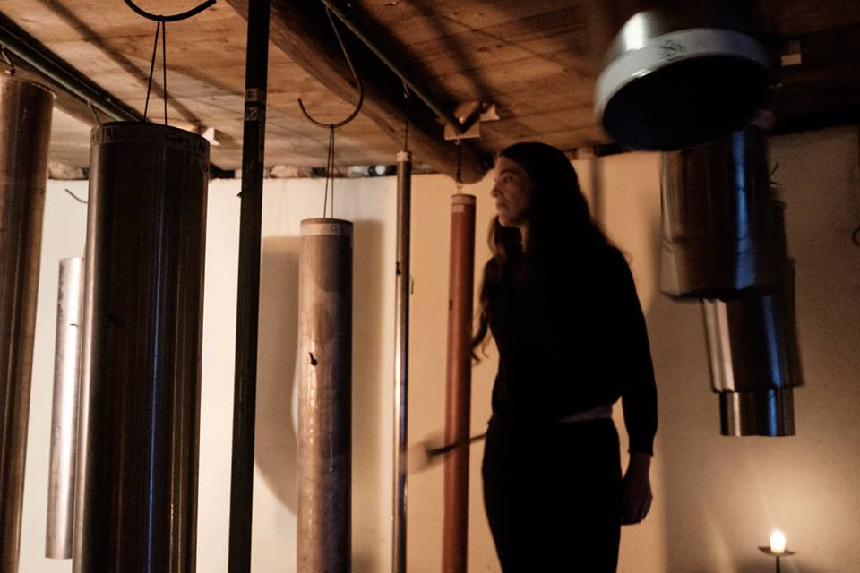
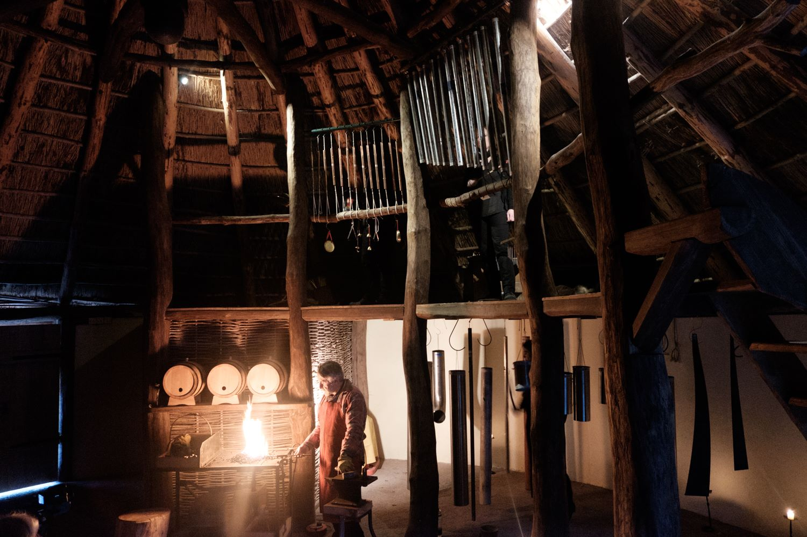
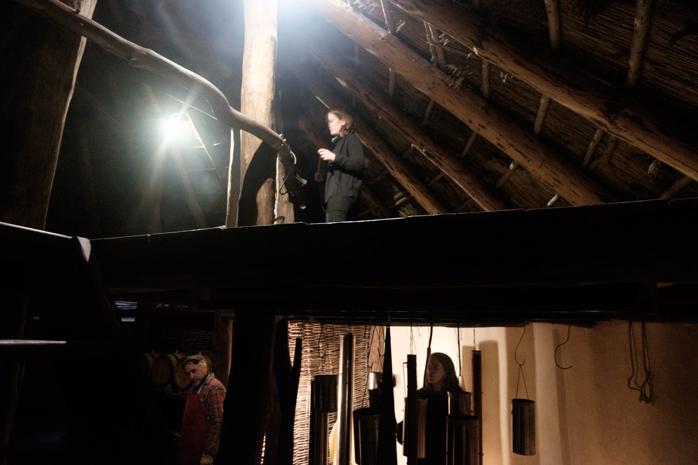

December 1st
Sounding Seams: Sunday 16th December at the National Heritage Park, Wexford
An exploration of metals by Laura Hyland & Guy Urbin.
In September 2018 The Irish National Heritage Park initiated an arts project, pairing artisan craftspeople working at the park with local artists. The project was funded by Wexford Co.Council Arts Dept & Creative Ireland. Laura Hyland was invited to work with blacksmith, Guy Urbin, and to lead a project combining sound and metal.
Taking inspiration from the myth of Pythagoras passing a blacksmith's workshop and hearing the pitched tones of metal on metal, from which it is said the western musical scale originated, Laura made sets of chime bars and tubular bells from copper pipe, mild steel and stainless steel. The project culminated in a performance piece at the Crannog in the Heritage Park, combining sound improvisation by Clang Sayne, a forgery demonstration by Guy Urbin, and a rewriting and retelling of the myth by Laura Hyland.
Video here: